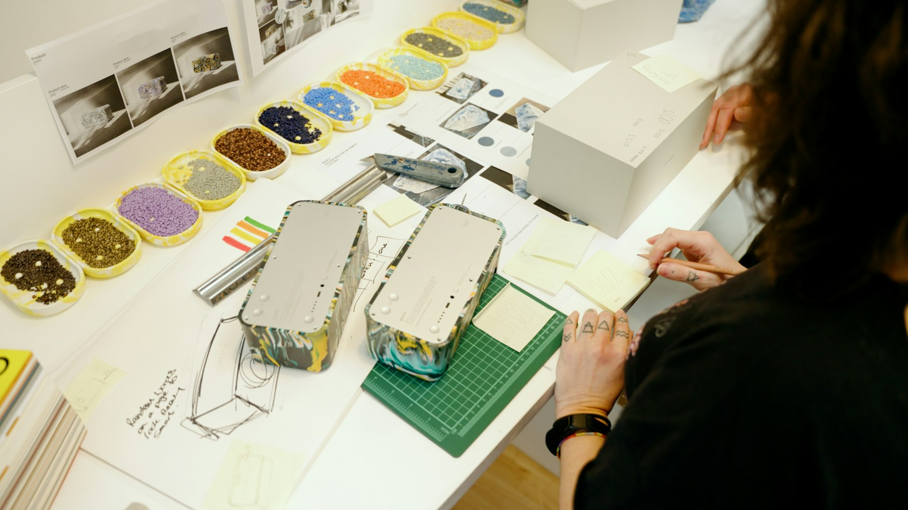
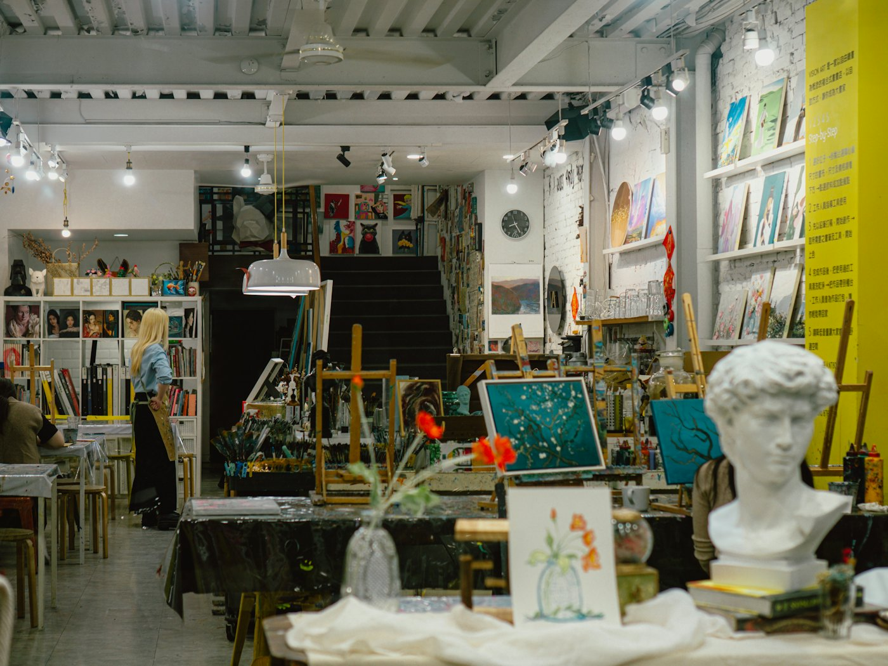
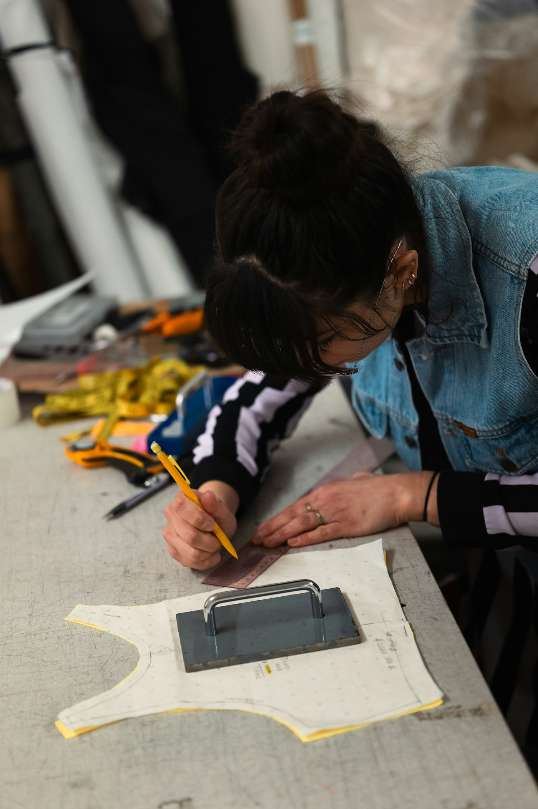
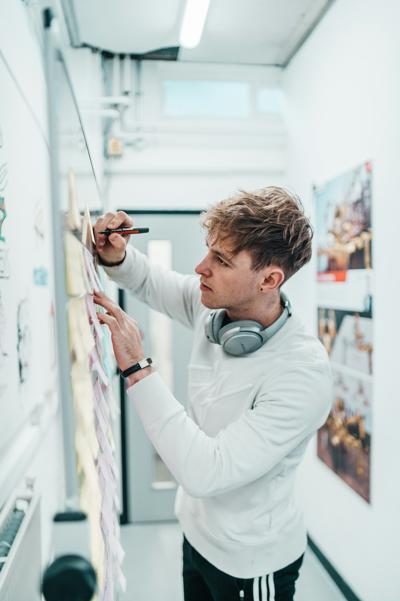
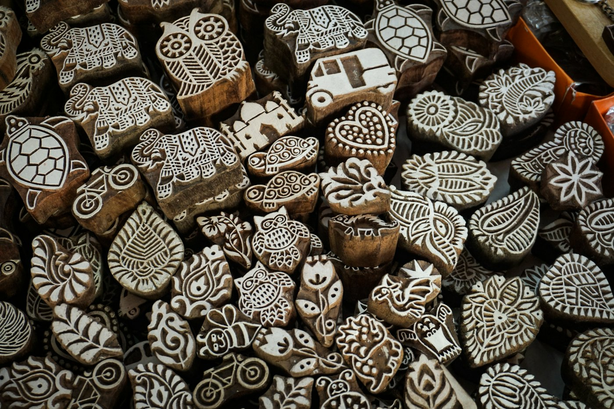
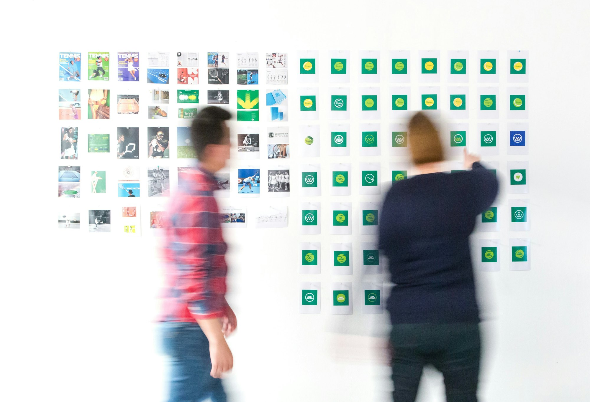

Observe
Go into the world. Ask better questions, understand people and study how things work.
For minds that question and hands that make.
A new home for design, research and skilled practice, with roots in India and a global outlook.

proposed programmes across fashion, product, spatial design and creative technology
guided studio hours a week in every full-time programme
minimum in technical craft and the final project to graduate
planned campus in Baner, Pune, with every discipline under one roof
Every programme is built around studio practice: guided making, independent work, regular critique and projects reviewed against professional standards. Start where you are and build depth over time.

Start with a core studio programme. Build depth through technical practice and advanced specialisation.
Compare all programmes
To build an internationally ambitious design school in India, where imagination meets the discipline to make it real.
We see design, research and technical skill as one continuous practice. Our vision brings Indian material knowledge into conversation with contemporary tools, thoughtful experimentation and the needs of a changing world.
Read our visionOur proposed learning model combines guided studios, independent work, regular critique and industry-reviewed projects.
Go into the world. Ask better questions, understand people and study how things work.
Think through your hands. Turn an idea into a pattern, a model, a prototype or a working system.
Invite critique. Measure, fit, question and test against the needs of the people you design for.
Make it again, with intention. Build the judgement and discipline that professional work requires.

Fashion tables beside digital workflows. Materials linked to fabrication. A shared environment where ideas cross disciplines.

Admissions planned around potential, commitment and a willingness to learn through making.

Indian material knowledge in conversation with contemporary tools and a global standard of practice.

Research through making: material tests, prototypes and field studies that produce real evidence.
Explore all six programmes